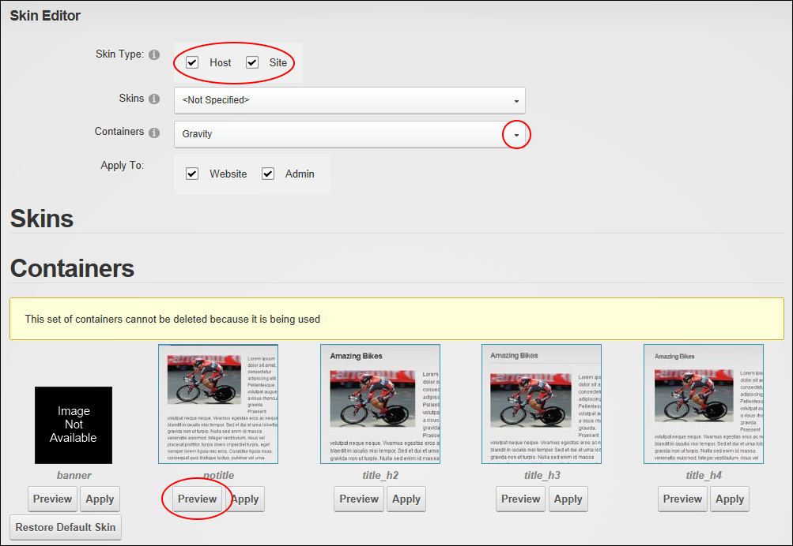

Previewing a Container Package
How to preview all of the containers within a container package.
- Navigate to Admin > Advanced Settings >
 Skins and go to the Skin Editor module - OR - Go to a Skins module.
Skins and go to the Skin Editor module - OR - Go to a Skins module.
- At Skin Type, select one or both of these options:
- Host: Select to view skins which are available to all sites.
- Site: Select to view skins which are only available to this site.
- At Skins, select from these options:
- Select a skin package from the drop down list to view the skins and containers within with this selected skin.
- Select < Not Specified > to hide all skins.
- At Containers, select a container package from the drop down list. A thumbnail image for each container is displayed.
- Click the Preview button to preview a container. This opens a new Web browser with a preview of the container.
- Repeat Step 5 to preview additional containers.

Previewing a Container Package